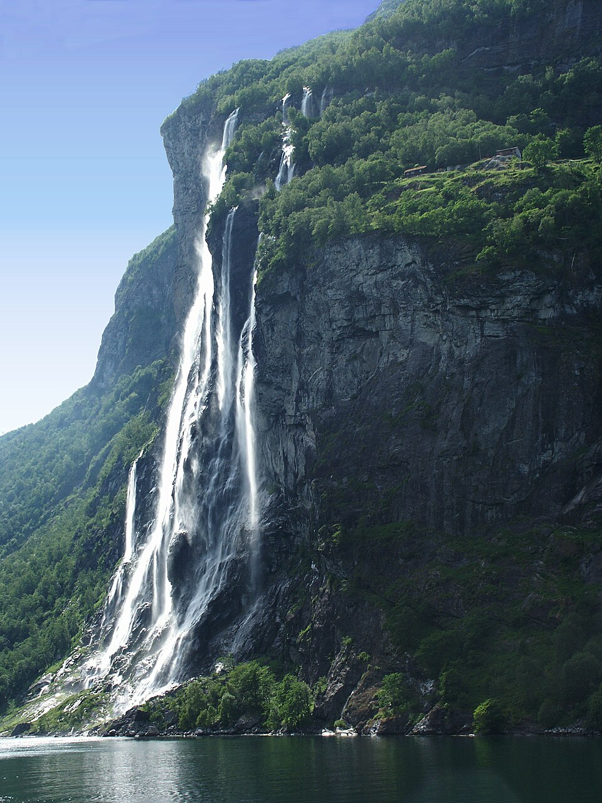
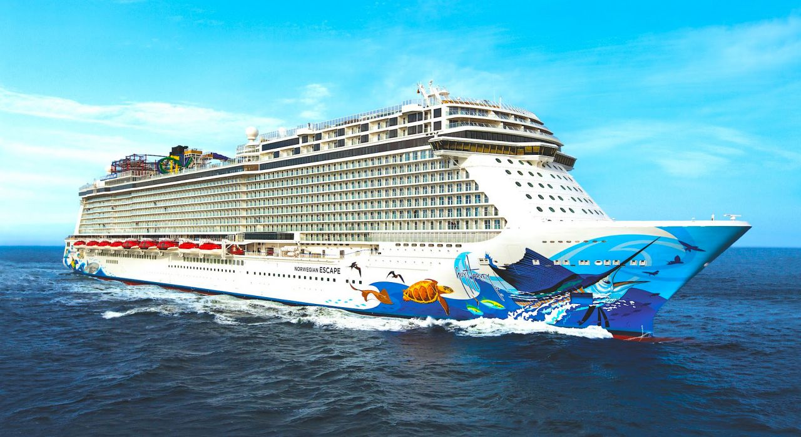

Водопады и изумрудная вода
Гейрангер-фьорд — это 15 километров потрясающей красоты. Отвесные скалы, зеленые склоны и знаменитые водопады: «Семь сестер» (De syv søstrene), «Жених» (Friaren) и «Фата невесты» (Brudesløret). Сюда заходят круизные лайнеры со всего мира.

